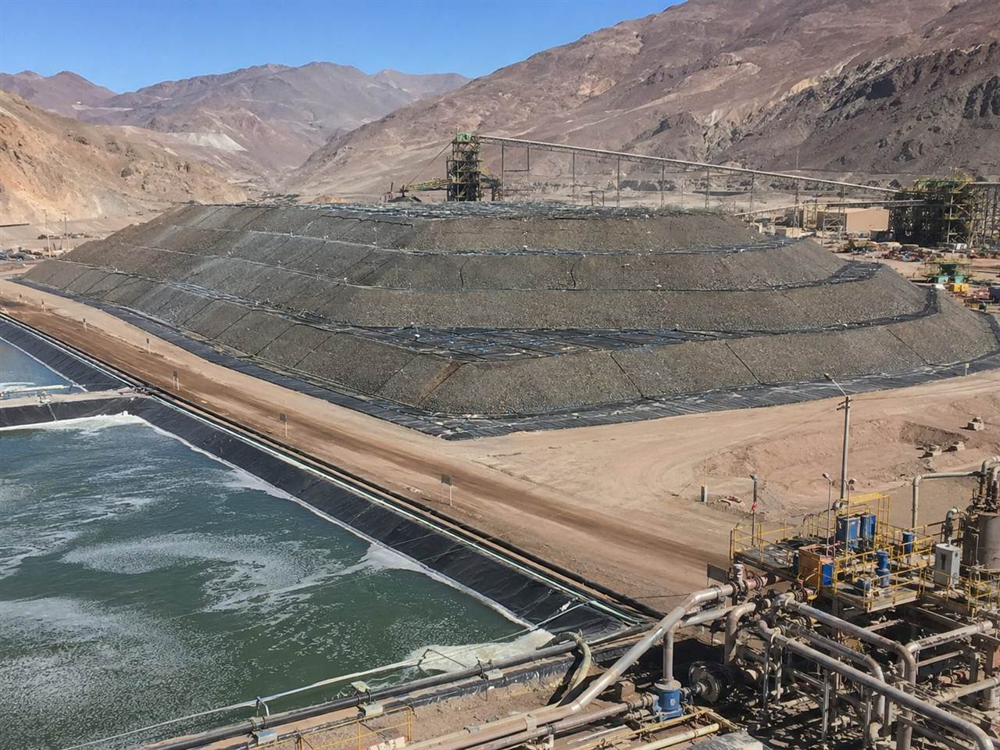

01
Flotación
Monitoreo de estabilidad, predicción de recuperación con contexto mineralógico y alertas tempranas de desviación del proceso.
RecuperaciónReactivosEstabilidad
Leemos las comunidades microbianas que viven en la pulpa, el agua de proceso y el mineral de tu planta, y las convertimos en inteligencia operacional propietaria. Los indicadores que tu SCADA nunca te va a dar.
Trazabilidad completa del dato operacional.
Proxies biológicos que anticipan cambios de proceso.
Cada planta es distinta. Cada modelo también.
SCADA, laboratorio, LIMS, microbiología, historiadores, ERP: cada sistema guarda una parte de la historia. Estas son las preguntas que una planta se hace todos los días, y cómo se responden hoy.
Se reconstruye días después, cruzando planillas y reportes de laboratorio a mano.
El modelo muestra qué variables cambiaron y en qué orden, con trazabilidad hasta el dato de origen.
Nadie la mide. Es la variable que más rápido cambia y la única que nadie mira.
Caracterizamos la pulpa, el agua de proceso y el mineral, y lo convertimos en indicadores propios de tu planta.
Se decide por experiencia y se corrige cuando el problema ya impactó la operación.
Recomendaciones priorizadas y explicables, que tu equipo valida antes de actuar.
Los proyectos de datos parten pidiendo SCADA, sensores y meses de integración.
Partimos con lo que la planta ya mide, incluso planillas, y escalamos por etapas.
Antes de que caiga la recuperación, cambia la biología del proceso. Nosotros la medimos.
Sensores, SCADA, planillas y registros manuales en cada banco y cada etapa del proceso. Digitalizamos lo que la planta ya mide, sin exigir instrumentación nueva.
Los tres flujos se integran en un modelo calibrado con datos reales de tu operación, que entiende cómo se relacionan mineralogía, proceso y biología. Sin modelos genéricos.
El agente detecta la desviación, explica qué la causa y propone qué hacer, con trazabilidad hasta la variable de origen.
No reemplaza al operador ni a la ingeniería de planta: entrega soporte predictivo y explicable.
Revisar la dosificación de reactivos antes del próximo turno.
Causa trazada: actividad microbiana de la pulpa, Eh y ley de cabeza. Ejemplo ilustrativo.Tres activos que se refuerzan entre sí. Ninguno es genérico. Los tres crecen con cada operación que se suma a la plataforma.
Integramos el flujo completo de cada planta, desde la mineralogía de cabeza hasta el concentrado final, en un modelo de trazabilidad total. Cada operación suma un activo de datos que no existe en ningún otro lugar.
DatosSecuenciamos, identificamos y cuantificamos las comunidades microbianas de la pulpa, el agua de proceso y el mineral. Caracterizamos lo que ya está vivo en la operación y lo convertimos en indicadores propietarios.
BiologíaGemelo digital, simulación what-if y agentes de IA entrenados con datos reales de cada faena. Cada predicción tiene data lineage hasta la variable de origen.
IA explicableQué microorganismos están presentes y su actividad biológica.
pH, redox, temperatura, granulometría y reactivos.
Indicadores propietarios por planta para guiar hipótesis y decisiones.
Tres activos. Una plataforma. Cero datos genéricos.
Un modelo específico por proceso, alimentado por las variables que de verdad lo mueven.
Monitoreo de estabilidad, predicción de recuperación con contexto mineralógico y alertas tempranas de desviación del proceso.

Control de cinética, potencial redox y modelo predictivo de recuperación con alertas de acidificación temprana.

Monitoreo de estabilidad, espesado y trazabilidad de campañas con detección temprana de riesgo ambiental.
No vendemos herramientas: combinamos investigación con respaldo académico y capacidad propia de laboratorio.
Colaboramos con universidades y centros de investigación en microbiología aplicada a procesos mineros, co-publicación de hallazgos y formación de talento especializado.
Controlamos el ciclo completo, desde la toma de muestra en faena hasta el análisis bioinformático, sin depender de laboratorios externos.
Machine learning, modelos predictivos y agentes inteligentes.
Microbiología aplicada, bioinformática y metagenómica.
Datos en tiempo real con simulación what-if.
Multi-agente con RAG y LLM, trazable en lenguaje natural.
Series temporales, detección de anomalías y optimización de variables operacionales.
SCADA, laboratorio, IoT y metagenómica integrados en un solo modelo.
Implementación por etapas y modalidad de suscripción: sin inversión de capital y con KPIs acordados desde el primer día.
Entendemos tu proceso, levantamos lo que la planta ya mide y tomamos las primeras muestras biológicas de pulpa, agua de proceso y mineral.
Mapa de datos y primera caracterizaciónCalibramos el gemelo digital con tus datos, fijamos la línea base y validamos las primeras alertas contra los KPIs acordados.
Línea base, KPIs y alertasOperación continua: monitoreo, nuevos indicadores biológicos y un modelo que mejora con cada campaña.
Plataforma, soporte y mejora continuaRegulación minera, tecnología, operaciones de planta, finanzas y biotecnología. Experiencia de faena, no solo de laboratorio.
Lidera la dirección ejecutiva, las relaciones comerciales, las alianzas estratégicas y la implementación en faena.
Lidera la visión tecnológica, la arquitectura de la plataforma y el desarrollo de producto.
Ingeniero comercial y ex jugador profesional de rugby. Más de 20 años de experiencia en minería en Argentina y Chile.
EMBA Universidad Austral. Empresario y emprendedor en LATAM, Board de Endeavor Argentina.
Doctor en Biotecnología (México) y Magíster en Ciencias Botánicas. 30 años en genética vegetal, biología molecular y fisiología.
Ingeniero Civil Metalurgista. Especialista en procesos metalúrgicos, flotación y operaciones de planta.